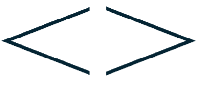
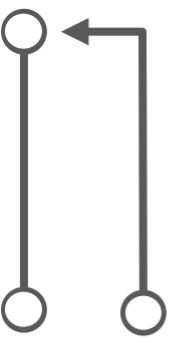

---
output: html_document
css: css/OTTR_style.css
---Want to contribute to the cheatsheets?
Please review our Contributor Covenant Code of Conduct before contributing.
Making a New Cheatsheet
Create a .Rmd or .md file at the top level of the repository. GitHub Actions will automatically render it as a PNG saved to the docs folder.
1. Choose a Style
Specify respective style in the yaml header:
OTTR style:
or
ITN style:
---
output:
html_document:
number_sections: false
css: css/ITN_style.css
---2. Add a Header Chunk
All cheatsheets should start with either chunk/create_ottr_header.md or chunk/create_itn_header/md. Specify the title, subtitle, and path to the PNG image.
Example:
ottrpal::borrow_chapter(
doc_path = "chunks/create_itn_header.md",
tag_replacement = list(
"{TITLE}" = "Your Title",
"{SUBTITLE}" = "Your Subtitle",
"{PATH_TO_PNG}" = "path-to-image.png"
))3. Add the corresponding PNG file
Each cheatsheet needs a corresponding PNG for the header and gallery. GitHub Actions will automatically render a PNG when you create your cheatsheet.
Example path:
https://raw.githubusercontent.com/ottrproject/cheatsheets/refs/heads/main/pngs/attending_conferences.pngReusing Content with Chunks
If text will appear more than once, put it in a .md file inside the chunks folder. Use {PLACEHOLDER} tags for variable content (not regex).
Chunks are especially useful for:
- Headers and footers
- Setup instructions
- Repeated GitHub workflow steps
- Standard reference sections
Example call:
ottrpal::borrow_chapter(
doc_path = "chunks/create_itn_header.md",
tag_replacement = list(
"{TITLE}" = "Attending Conferences",
"{SUBTITLE}" = "Helpful Tips",
"{PATH_TO_PNG}" = "https://raw.githubusercontent.com/ottrproject/cheatsheets/refs/heads/main/pngs/attending_conferences.png"
))Getting icons
Use the following code to include icons that are already set up in this repo.
| Icon | Output | Code |
|---|---|---|
| Actions | <img src='resources/icons/actions.png' alt='actions icon' class = icon width = '200px'> |
|
| Copy | <img src='resources/icons/copy.png' alt='copy icon' class = icon width = '200px'> |
|
| Collaborate | <img src='resources/icons/collaborator.png' alt='collaborator icon' class = icon width = '200px'> |
|
| Develop |  |
<img src='resources/icons/developer_settings.png' alt='developer settings icon' class = icon width = '200px'> |
| Edit | <img src='resources/icons/edit.png' alt='edit icon' class = icon width = '200px'> |
|
| Pages | <img src='resources/icons/pages.png' alt='pages icon' class = icon width = '200px'> |
|
| Token | <img src='resources/icons/personal_tokens.png' alt='personal access token icon' class = icon width = '200px'> |
|
| Profile | <img src='resources/icons/profile_photo.png' alt='profile photo icon' class = icon width = '200px'> |
|
| Pull Request |  |
<img src='resources/icons/pull_request.png' alt='pull request icon' class = icon width = '200px'> |
| Search | <img src='resources/icons/search.png' alt='search icon' class = icon width = '200px'> |
|
| Secrets | <img src='resources/icons/secrets_and_variables.png' alt='secrets and variables icon' class = icon width = '200px'> |
|
| Settings | <img src='resources/icons/settings_gear.png' alt='settings gear icon' class = icon width = '200px'> |
Adding Cheatsheets to the Main Gallery
Update gallery.yml with your cheatsheet’s information under the appropriate category:
Example:
- title: Google Analytics Integration
href: https://ottrproject.org/cheatsheets/google_analytics.html
code: https://github.com/ottrproject/cheatsheets/blob/main/google_analytics.Rmd
thumbnail: pngs/google_analytics.pngMake sure to check the render of index.Qmd!